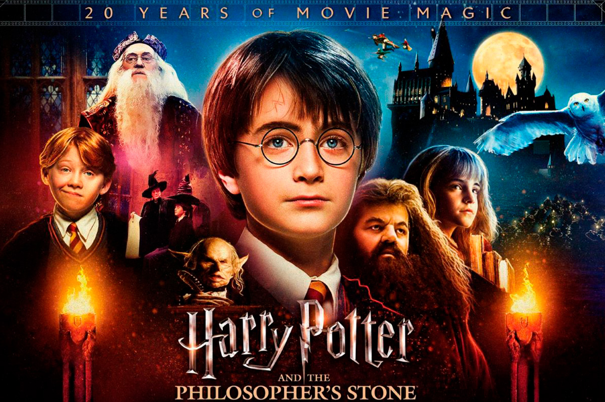

Olá, eu sou o filho direto de article (ficará azul)
Olá, eu sou o neto de article (não fico azul)
O CSS atua definindo estilos para os elementos dentro de uma página HTML. Cada estilo é composto por um seletor (que identifica os elementos a serem estilizados) e por um conjunto de declarações (que indicam quais propriedades visuais devem ser aplicadas e quais valores elas terão).
Este é um texto de exemplo para demonstrar como o CSS pode ser usado na estilização. Pode-se observar como a pseudo-classe first-line altera a cor tanto da box1 quanto da box2.
Olá, eu sou o filho direto de article (ficará azul)
Olá, eu sou o neto de article (não fico azul)
Esse parágrafo está dentro da Box
Esse outro parágrafo está dentro de uma div, localizada dentro da Box
Imagem 01
Imagem 02
Esse é um parágrafo de exemplo